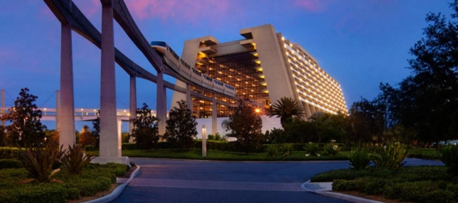

.png)
.PNG)
.PNG)
.PNG)
.PNG)
.PNG)
.JPG)
.JPG)
.PNG)
.PNG)


source
The last time we were together, we were looking at Mickey’s Not So Scary Halloween Party at Disney’s Magic Kingdom. Â Today I want to share with you a bit more about that trip. Â First, I want you to see where we stayed – Disney’s Contemporary Resort. Â Normally we try to book our accommodations at one of the Epcot area resorts, but this time, we wanted to be on the monorail line so that it would be easy to return to our room for a rest if we wanted.
We had never stayed there before, but I would definitely recommend it for adults. Â I am not sure I would take young children there though because it is very lacking in the normal Disney theme-ing you find in other properties around the parks. Â We had two queen beds and a fold down sleeper sofa, but the room looked like it could be in any other nice hotel anywhere.
The views from our balcony were gorgeous.
You can see Bay Lake in the photo below.

Looking to the right was this view of the pool and the Garden Wing.
If you walked right outside our room’s door and looked over the balcony there, this was the view:
Pretty cool, huh?  🙂 The Contemporary Resort is the only Disney hotel in which the monorail runs right through the lobby.
Thanks to our Disney employed daughter, we were staying on the Atrium Club Level. Â Because I had done all the planning for this trip, we did not really need the concierge services that came with that, but what we did enjoy was all the food available to us at that level. Â Our room had a coffee maker, but right down the hall from us was the club lounge with coffee, espresso, and cappuccino available from 6:30 a.m. until 10:00 p.m. Â A continental breakfast of pastries, fruit, cereals, and hot oatmeal was provided to us from 7:30 a.m. until 10:30 a.m.
If we had been in our hotel room anytime from 11:30 a.m. until 4:00 p.m. we could have enjoyed snacks in the lounge.  We were in the parks during those hours, but I know they had cookies, candies, potato chips, and more fruit…along with a number of beverage choices.  From 5:00 pm. until 7:00 they served cheese and crackers and hot hor’devours, and from 8:00 p.m. – 10 p.m. cordials and desserts were available.  So we certainly could have eaten our way through the Contemporary Resort! (And that doesn’t even count the restaurants that are there. 🙂 ) Oh, and let’s not forget the view from the lounge.  Do you see how close we were to Magic Kingdom’s Space Mountain?!
And how about this view of the castle? 🙂
Not only does the Contemporary Resort have food and restaurants to enjoy, but it also has a number of nice shops. Â I was very tempted to get one of those black quilted Vera Bradley bags.
And can you believe this is a Disney Dooney and Bourke handbag? 🙂
Not sure who made these red polka dot ones, but they were cute.
In addition to the shopping and dining, one of the biggest reasons to me for staying at the Contemporary is its proximity to the parks. It is actually just a short walk (10 minutes) to Magic Kingdom (or a monorail ride), and it is only two quick monorail rides to Epcot.  So on our second day there (which happened to be my mother-in-law’s birthday 🙂 ) we hopped on the monorail and headed over to Epcot.
We rode Spaceship Earth, The Seas with Nemo, Living with the Land, and our favorite, Soarin‘.
Then we headed over to World Showcase. Â I love love love looking at the various styles of architecture represented in each of the “countries” there.
Norway…
Italy…
France…
and many more (China, Mexico, United Kingdom, Germany, United States, Japan, Morocco, and Canada.)  On this particular trip, there was even more to experience in Epcot because the Food and Wine Festival happened to be going on. 🙂
They have concerts, cooking demonstrations, special programs, and even creative landscaping for this major event!
But the best part of the festival is….the food!  (Of course! 🙂 )  Each of the countries and several companies have kiosks set up all around World Showcase where you can purchase small plates of their food and drink.  Here is the one for Scotland.
And at each kiosk you will find a board with the menu. Â My absolute favorite food was in Canada, and my filet mignon was perfect. Â Bowls of their cheese soup were flying out of there, so I know it must have been delicious as well. (You can see all 30 menu boards from the festival in a post here.)
We ate our way around Epcot sampling Italian Parmigiana, French creme brulee, American smoked beef brisket, and several other dishes.  In between each food stop, we enjoyed the film attractions offered at each country, and later in the day, we took a 2 hour break back at the hotel.  We returned around 7:00 p.m. to ride the Gran Fiesta Tour in Mexico, Soarin’ one more time, and then believe or not, we went to dinner (yes, we ate again) at Via Napoli. 🙂 We had gotten my mother-in-law a “Today’s my birthday” pin to wear, and everywhere she went that day, cast members and Disney guests sweetly wished her a happy birthday (and a few even sang to her on the monorail!)  At Via Napoli, the servers surprised her with a dessert complete with their rendition of Happy Birthday to You and a candle to blow out.
The day ended with our viewing of Illuminations on World Showcase Lagoon.
Pretty music and lots of fireworks!
(which look kind of like a battle on the water, don’t they?)
Two more monorail rides and we were back at our hotel for the night. Â It was a fun (although exhausting) day! Â If you have the opportunity to attend the Food and Wine Festival at Epcot, I would highly recommend it. Â It runs from mid-September to mid-November each year. Â I understand that weekends get very busy with not only park guests but also local area residents. So you would probably enjoy it more mid-week.
I am busy working on Thanksgiving decorating this weekend and (fingers-crossed!) will have a post up for you to see it next week. Enjoy your weekend – whether it is with football, food, family, or friends.  I hope it’s a fun one! 🙂
Until next time…


.PNG)
Thank you for sharing your beautiful family and trip to Disney with us. I just love your home and style. This posting could not have come at a better time as we are leaving for Disney on Thursday. I as well will celebrate my birthday with our family. This will be our grandchildren first visit,twins are 5 and granddaughter is 8. Was the weather warm for you? We have our days jam packed,but so exciting for all of us. Thanks again for sharing.
What a lovely trip for you to enjoy with your family. As usual, you have captured the mood and taken some wonderful photos. Thankyou so much Kelly. I look forward to your Thanksgiving decor.
What a fun trip. I do love Disneyland, but I clearly remember when Disney World was being built and I’m pretty sure they had more room and therefore, more details in the park. Thanks for showing me some of the details of the park on the other coast.
xo,
Karen
How fun! Disney is such a magical place! I took our two children to Disney with a fellow teacher every spring break for ten years. We have wonderful memories of being there. I have to tell you a funny Disney story on my mom. She and my dad went with my brother’s family and while there had breakfast with the characters. When she was telling me about it she said, “You know, it wasn’t the real Mickey Mouse!” I still laugh when I think of her telling me that. She said, “You know what I mean! It was somebody dressed up like him.” I am happy you took your mother and mother-in-law. How sweet! I hope they got to see the real Mickey Mouse!
Oh Kelly, thanks for sharing. It truly is a Magic Kingdom. I have been there only as an adult. It’s Magic because your innocence returns in the sweetest way. Just watching that video, I felt warm and happy ! I would love to go back someday. How nice to take your Moms….
Thanks again for the travelog, I sooo enjoy these!
Looking forward to seeing your Thanksgiving decor, I’m sure it won’t disappoint.
We enjoyed a gathering outdoors with our new neighbors last night, sitting around a couple of fire pits, roasting hot dogs and marshmallows and eating too much food. It was a chilly night! Today we have family coming to celebrate my brother in laws 62nd birthday and recent retirement. Should be a good time. and also too mush eating I’ll wager! Hope you are enjoying your weekend too!
Hi Kelly. Nice to see another trip report fom you. The Food and Wine event would be, in my mind, the perfect time to experience Epcot!
Your mother-in-law would feel very special spending the day in such a happy environment being greeted by everyone.
Love the idea of the monorail going right through your hotel. Especially convenient for much needed afternoon breaks. How nice to experience the perks of the Atrium Club Level.
Looking forward to seeing Thanksgiving decorating. I just love your home.
Enjoy your week, T
You and I would be good Disney buddies, because you did all my favorite things! However, I’ve never stayed at the Contemporary, although it’s on my list of places to stay just because my Grandparents stayed there years ago, as did my husband’s grandmothers, and I think that’s so retro-nostalgic! We’ve had the character breakfast there, then caught the monorail right into the park, which like you said is such a major convenience!
So happy you had a fun time, and the food sounds fabulous!
Oh Kelly, do you ever just sit? What a lovely trip for your mother-in-law’s birthday.You are a wonderful daughter-in-law (and daughter), I hope she is doing well. I always enjoy your pictures from your trips, you show things I find interesting. However, I do wish you had placed the price tag on the Dooney and Bourke handbag so we could see it (and gasp)….I mean really, a person would have to be a true Disney fanatic to buy it. I look forward to your Thanksgiving decorating post. My husband turns 70 on the 22nd and my daughter and I are planning a surprise party. It will be nothing as elaborate as you would do and frankly if we can surprise him I’ll be pleased. My daughter wants to do an outdoor firepit type party at her home so I am hoping the lovely weather we have been having will stick around for a few more weeks.
Nice seeing your trip and the view from the Contemporary– perfect for adults!! Always loved going through there on the monorail. The Food and Wine Festival is always a great time to visit EPCOT and the weather is usually somewhat cooler in the evenings. My daughter and her friends go there several times during the month and were there today. Thinking about Thanksgiving– she ordered a Willy Bird Turkey from WS for us -should arrive the day before already cooked and ready to reheat!! Everything we have ever gotten from William Sonoma has been excellent!! Hope you get your post up for Thanksgiving soon. Always look forward to it. I hope to do my decorations tomorrow. Trying to keep it simple this year. Wanting cooler weather to arrive — but not yet!! 🦃🍂🍁